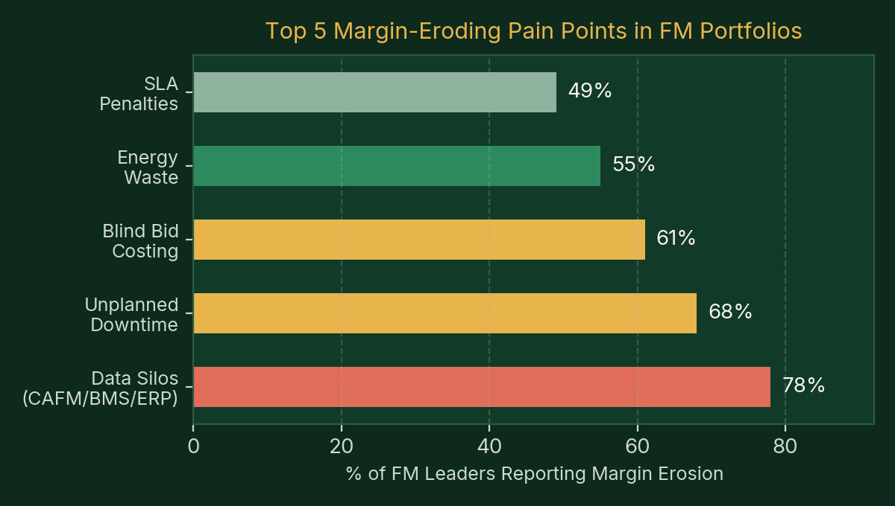

IFMA-Aligned Executive eBook · KSA & Global FM
AI Across the FM Value Chain
From the Plant Room to the Boardroom: A comprehensive, 100x-value playbook for C-suite leaders, asset owners, and FM engineers—featuring KSA Vision 2030 benchmarks, real case studies, and an EBITDA-first implementation roadmap.

$37.7B → $67.5BKSA FM Market (2025–2030E)
50–70%Downtime Reduction
9.0% → 15.3%Net Contract EBITDA
< 6 MonthsROI Payback Period
Authored by Aamir Zameer — Senior Forward Deployed Engineer & FM Advisory · AZ Consultants KSA
Chapter 01 · Market Outlook & C-Suite Pain Points
Why 78% of FM Leaders Lose Margin to Data Silos
Under ISO 41001 and IFMA standards, Facilities Management integrates People, Place, and Process to protect the core business. As Saudi Vision 2030 giga-projects transition from construction to 20-year operations, manual and reactive FM can no longer protect SLA margins.
Known Industry Fact80% of FM AI pilots fail not because of weak AI models, but because nobody fixed the CAFM-to-BMS-to-ERP data plumbing first.
 KSA FM Market Trajectory (2025–2030E, USD Billions)
KSA FM Market Trajectory (2025–2030E, USD Billions)
Top 5 Margin-Eroding Pain Points in FM Portfolios
Commercial LeveragePrice contracts around core-business uptime and occupant safety, not headcount. Move 20% of your portfolio to outcome-based contracts within 18 months.
Chapter 03 · Commercial & EBITDA Playbook
Expanding Net Contract EBITDA from 9.0% to 15.3%
AI is not an IT cost centre—it is a direct margin-expansion engine across pre-contract bidding (22% → 34% win rate), energy optimisation (-25%), dynamic labour routing, and avoided SLA penalties.
 Contract Monetisation Waterfall: 9.0% → 15.3%
Contract Monetisation Waterfall: 9.0% → 15.3% 12-Month AI Adoption & ROI J-Curve (<6 Mo Payback)
12-Month AI Adoption & ROI J-Curve (<6 Mo Payback)